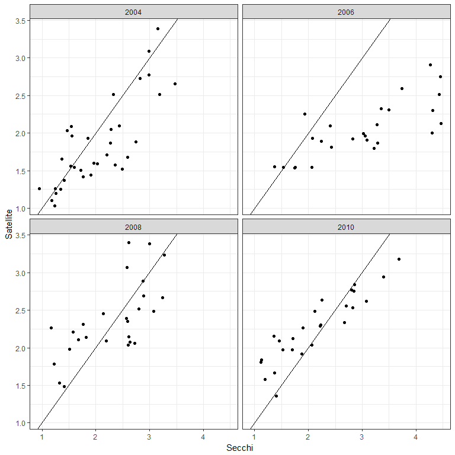
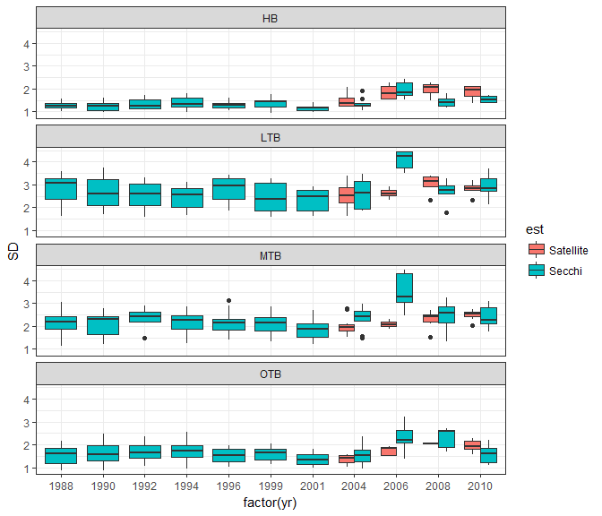
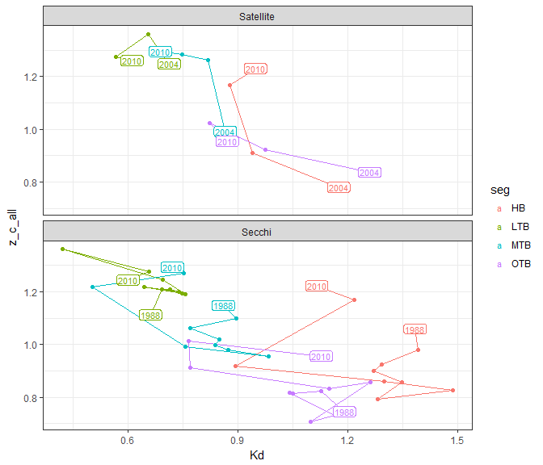
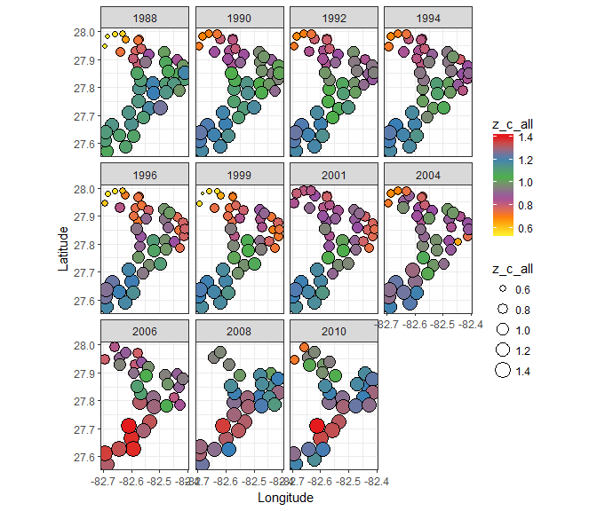
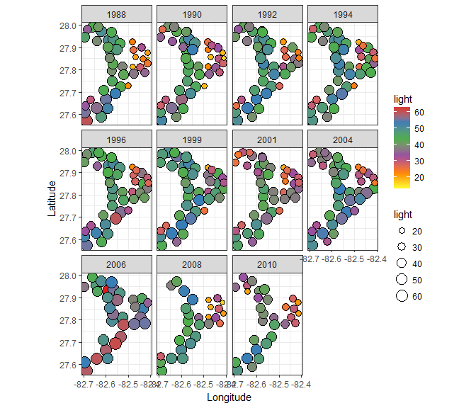
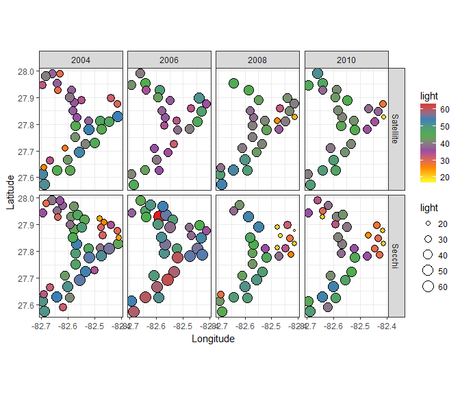

Annual changes in depth of colonization and light requirements in Tampa Bay
Secchi data from the Tampa Bay Water Atlas (link) were obtained for all locations in the same years with seagrass coverage: 1988, 1990, 1992, 1994, 1996, 1999, 2001, 2004, 2006, 2008, and 2010. Secchi data with a minimum of ten monthly observations were averaged within each year at each location.
Satellite data were available for 2003 through 2010, with four years overlapping with seagrass data.
# load data
data(tb_seg)
data(tb_sats_all)
sats_melt <- reshape2::melt(tb_sats_all[['sats_all']], id.var = c('lat', 'lon'))
# color ramp
cols <- rev(c('blue', 'lightblue', 'yellow', 'brown'))
# prep data
to_plo <- sats_melt
to_plo$variable <- factor(to_plo$variable, labels = c('Average', seq(2003, 2010)))
seg_plo <- fortify(tb_seg)
# leg lab
leg_lab <- 'Clarity (m)'
# make plot
p <- ggplot(data = seg_plo) +
geom_polygon(aes(x = long, y = lat, group = group),
colour = 'black', fill = colors()[245]) +
geom_tile(data = subset(to_plo, !is.na(value)),
aes(x = lon, y = lat, fill = value, colour = value)
) +
geom_polygon(aes(x = long, y = lat, group = group),
colour = 'black', fill = NA) +
coord_equal() +
facet_wrap(~ variable) +
scale_colour_gradientn(leg_lab, colours = cols) +
scale_fill_gradientn(leg_lab, colours = cols) +
scale_x_continuous(expand = c(0,0)) +
scale_y_continuous(expand = c(0,0)) +
theme_classic() +
theme(
panel.grid.major = element_blank(),
panel.grid.minor = element_blank(),
axis.title.x = element_blank(),
axis.title.y = element_blank(),
axis.text.x = element_text(size = 8),
axis.text.y = element_text(size = 8),
legend.position = 'top'
)
p
Secchi and satellite clarity (m) by year, all matched locations:
# polygon segment
data(tb_seg)
# secchi data
data(secc_all_tb)
# seagrass points
data(sgpts_all_tb)
# 1km seagrass buffer for clipping
data(sgbuff_2010_tb)
# satellite data, 2003 to 2010
data(tb_sats_all)
sat_dat <- tb_sats_all$sats_all
# yrs to eval, years with satellite data and seagrass coverage
# note that previous analysis averaged water clarity from sat data from 2006 to 2010
yrsinsat <- names(tb_sats_all$sats_all) %>%
grep('[0-9]+', ., value = T) %>%
gsub('^.*_', '', .)
yrsinsat <- yrsinsat[yrsinsat %in% names(secc_all_tb)]
out_ls <- vector('list', length = length(yrsinsat))
names(out_ls) <- yrsinsat
# process years
for(i in seq_along(yrsinsat)){
source('R/funcs.R')
# get yr index and data in the year
yr <- yrsinsat[i]
secc <- secc_all_tb[[yr]]
# satellite data
yrcol <- paste0('clarity_', yr)
torast <- sat_dat[, c('lon', 'lat', yrcol)]
sat_rast <- make_rast_fun(torast, yrcol)
# extract secchi locations on sat data
# sample the satellit clarity raster
samp_vals <- raster::extract(sat_rast, secc, sp = T)
samp_vals <- data.frame(samp_vals, ests = 'Satellite') %>%
.[, c('Longitude', 'Latitude', yrcol, 'ests')]
names(samp_vals)[names(samp_vals) %in% yrcol] <- 'clarity'
# format secchi data for combo with sat ests
secc <- as.data.frame(secc) %>%
select(Longitude, Latitude, SD) %>%
rename(
clarity = SD
) %>%
mutate(
ests = 'Secchi'
)
out <- rbind(samp_vals, secc) %>%
data.frame(., yr= yr)
out_ls[[i]] <- out
}
toplo <- do.call('rbind', out_ls) %>%
spread(ests, clarity)
ggplot(toplo, aes(x = Secchi, y = Satellite)) +
geom_point() +
geom_abline(yintercept = 0, slope = 1) +
facet_wrap(~yr) +
theme_bw()## Warning: Ignoring unknown parameters: yintercept## Warning: Removed 41 rows containing missing values (geom_point).
Regression models comparing Satellite, Secchi all dates (2006 is removed in the second). Chen et al. 2007 report R2 of 0.67 between in situ secchi and satellie-derived Kd.
modall <- lm(Satellite ~ Secchi, toplo)
modno06 <- lm(Satellite ~ Secchi, toplo[!toplo$yr %in% '2006', ])
summary(modall)##
## Call:
## lm(formula = Satellite ~ Secchi, data = toplo)
##
## Residuals:
## Min 1Q Median 3Q Max
## -0.92467 -0.32848 -0.02056 0.28565 1.27893
##
## Coefficients:
## Estimate Std. Error t value Pr(>|t|)
## (Intercept) 1.07229 0.09698 11.06 <2e-16 ***
## Secchi 0.44337 0.04134 10.73 <2e-16 ***
## ---
## Signif. codes: 0 '***' 0.001 '**' 0.01 '*' 0.05 '.' 0.1 ' ' 1
##
## Residual standard error: 0.4101 on 151 degrees of freedom
## (41 observations deleted due to missingness)
## Multiple R-squared: 0.4324, Adjusted R-squared: 0.4286
## F-statistic: 115 on 1 and 151 DF, p-value: < 2.2e-16summary(modno06)##
## Call:
## lm(formula = Satellite ~ Secchi, data = toplo[!toplo$yr %in%
## "2006", ])
##
## Residuals:
## Min 1Q Median 3Q Max
## -0.78567 -0.27926 -0.00947 0.26968 1.35266
##
## Coefficients:
## Estimate Std. Error t value Pr(>|t|)
## (Intercept) 0.76540 0.10357 7.39 1.5e-11 ***
## Secchi 0.61690 0.04746 13.00 < 2e-16 ***
## ---
## Signif. codes: 0 '***' 0.001 '**' 0.01 '*' 0.05 '.' 0.1 ' ' 1
##
## Residual standard error: 0.3772 on 132 degrees of freedom
## (37 observations deleted due to missingness)
## Multiple R-squared: 0.5614, Adjusted R-squared: 0.558
## F-statistic: 168.9 on 1 and 132 DF, p-value: < 2.2e-16Comparisons of satellite and secchi data, within 1km of seagrass:
# secchi and satellite light ests, all years
data(tb_light_allsat)
data(tb_light_allsec)
sec <- reshape2::melt(tb_light_allsec, id.vars = names(tb_light_allsec[[1]])) %>%
mutate(est = 'Secchi')
sat <- reshape2::melt(tb_light_allsat, id.vars = names(tb_light_allsat[[1]])) %>%
mutate(est = 'Satellite')
# subset secchi data with estimable sat data
tb_ts <- rbind(sec, sat) %>%
select(-Station_ID) %>%
rename(yr = L1)
ggplot(tb_ts, aes(x = factor(yr), y = SD, fill = est)) +
geom_boxplot() +
theme_bw() +
facet_wrap(~seg, ncol = 1)
ggplot(tb_ts, aes(x = factor(yr), y = light, fill = seg)) +
geom_boxplot() +
theme_bw() +
facet_wrap(~est, ncol = 1)
summs <- group_by(tb_ts, seg, yr, est) %>%
summarise(
SD = mean(SD),
z_c_all = mean(z_c_all),
light = mean(light)
)
labs <- filter(summs, yr %in% c('1988', '2004', '2010')) %>%
filter(!(yr %in% '2004' & est %in% 'Secchi'))
ggplot(summs, aes(x = z_c_all, y = light, colour = seg)) +
geom_path() +
geom_point() +
geom_label(data = labs, aes(label = yr), size = 3, label.padding = unit(0.1, "lines")) +
theme_bw() +
facet_wrap(~est, ncol = 1)
toplo1 <- filter(tb_ts, est %in% 'Secchi')
toplo2 <- filter(tb_ts, as.numeric(yr) > 2003)
ggplot(toplo1, aes(x = Longitude, y = Latitude, size = z_c_all, fill= z_c_all)) +
geom_point(pch = 21) +
facet_wrap( ~ yr) +
coord_equal() +
theme_bw() +
scale_fill_distiller(palette = 'Set1')
ggplot(toplo1, aes(x = Longitude, y = Latitude, size = light, fill= light)) +
geom_point(pch = 21) +
facet_wrap( ~ yr) +
coord_equal() +
theme_bw() +
scale_fill_distiller(palette = 'Set1')
ggplot(toplo2, aes(x = Longitude, y = Latitude, size = light, fill= light)) +
geom_point(pch = 21) +
facet_grid(est ~ yr) +
coord_equal() +
theme_bw() +
scale_fill_distiller(palette = 'Set1')